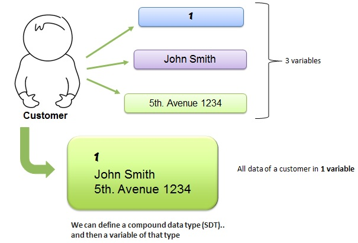

Acronym of Structured Data Type . Largely known as Record, Struct or Structure in most programming languages, it is the Genexus object which allows defining complex data structures. An SDT represents data whose structure is made up of several elements like a Customer struct. 
|